1 de novembro de 2010 as 14:37h
Em um parque familiar, você anda pacificamente, você iria para uma clareira familiar para ver um amigo da faculdade que você não vê a anos.

Você está andando pelas arvores quando escuta sons de jatos cortando os céus, mais de 20 caças vão em direção a algo. Os animais do parque se assustam e ficam inquietos. Você recebeu um alerta no seu celular enquanto sirenes altas tornaram o cenario mais infernal, o céus ficam vermelhos como sangue, Os animais a seu redor se desesperam e saem correndo e rastejando, os passaros se recusam a voar.
Um aviso governamental cobre a tela. " Nossos vizinhos do outro lado invadiram nossa grande nação, retaliação nuclear foi a nossa única resposta. Para aumentar sua chance de sobrevivência vá para o centro da cidade grande mais próxima onde você poderá ser mandado a um bunker, não tente salvar idosos, animais, incapacitados ou feridos de qualquer maneira. Não tente combater os Invasores sem armas de alto calibre ou veículos bélicos, os invasores parecem com anjos de multiplos períodos com diferentes habilidades, não se aproxima de nenhum cadáver ou raiz vermelha que pode surgir no seu caminho. Deus salve a America"
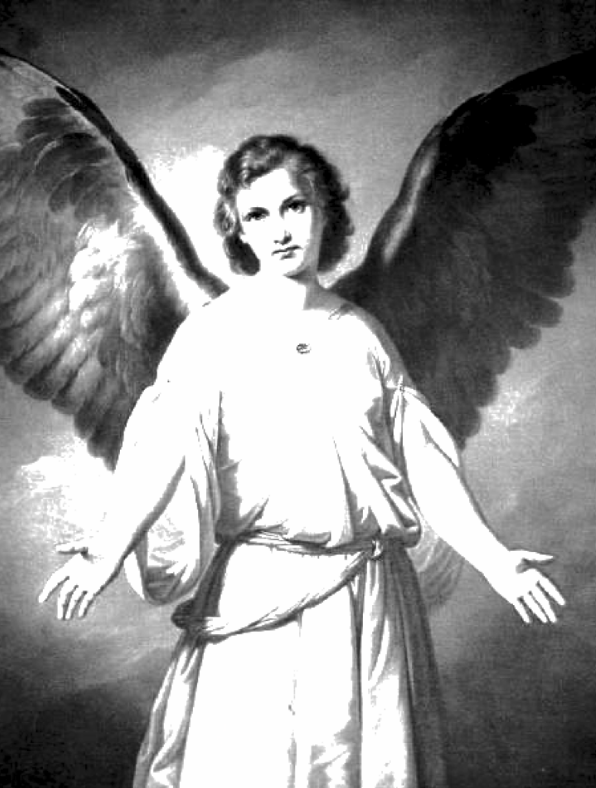Você escuta sons de tiros vindo da entrada do parque e mais gritos. Para onde ir?
Você corre desesperado ouvindo o som das e alarmes cirenes multiplas viaturas vão em direção a um cogumelo nuclear a muitos quilometros de distancia. Muitos aviões militares bombardeiam pontos da cidade, para onde ir quando não lhe resta nada?
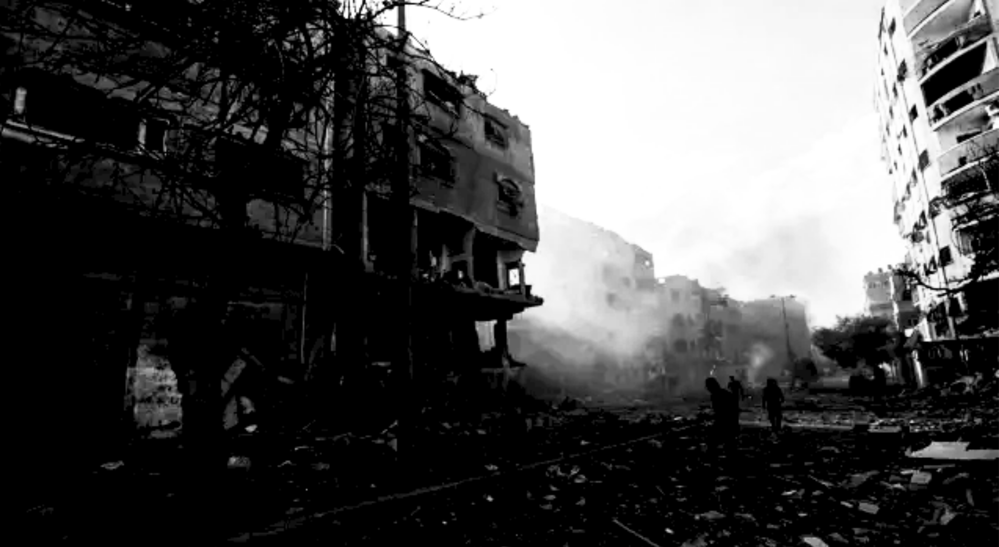Você observa os militares atirando contra os civils. “Morram demonios e ouçam a voz do criador” Os carros blindados exterminam cada um dos civils você pensa estar seguro até ouvir a frase de um militar “O Anjo Ainda está na floresta? bombardeio? Gerenal! eu ainda não tirei minhas tropas!!” você escuta fogo caindo... Você está atrasado...
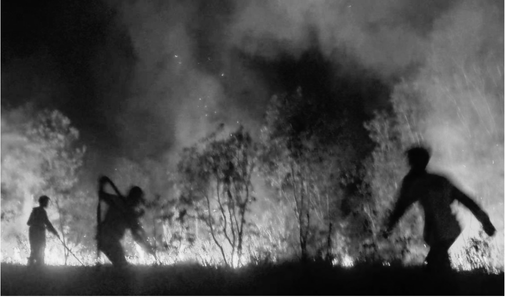
Você vê seu amigo o corpo dele está coberto por raizes vermelhas vibrantes,. Você escuta os animais da floresta indo até rochedo com agua. Uma coisa muito ruim está prestes a acontecer... Para onde Ir?
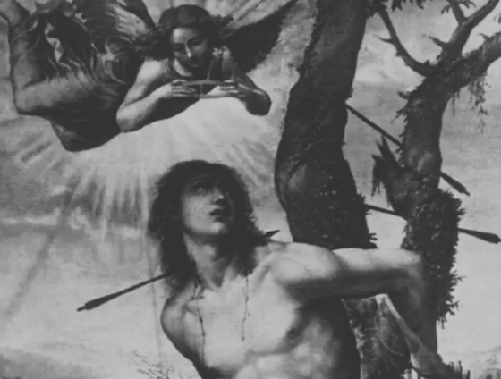1 de novembro de 2010 as 14:44h
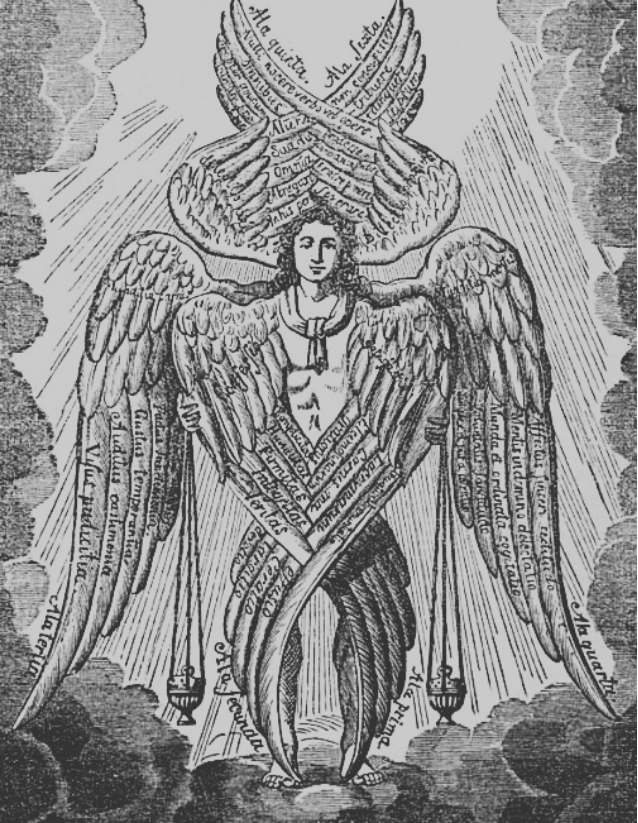Você se ajoelha no chão de folhas secas galhos quebrados e sangue de civils assassinados por militares. Um anjo aparece uma figura sacra com metros de altura muitos pares de asas e, cabelos ruivos que chora rios de sangue. Ele te decapita com as mãos antes das bombas cairem. Uma das Bilhões de vitimas dos Anjos.
1 de novembro de 2010 as 14:45h
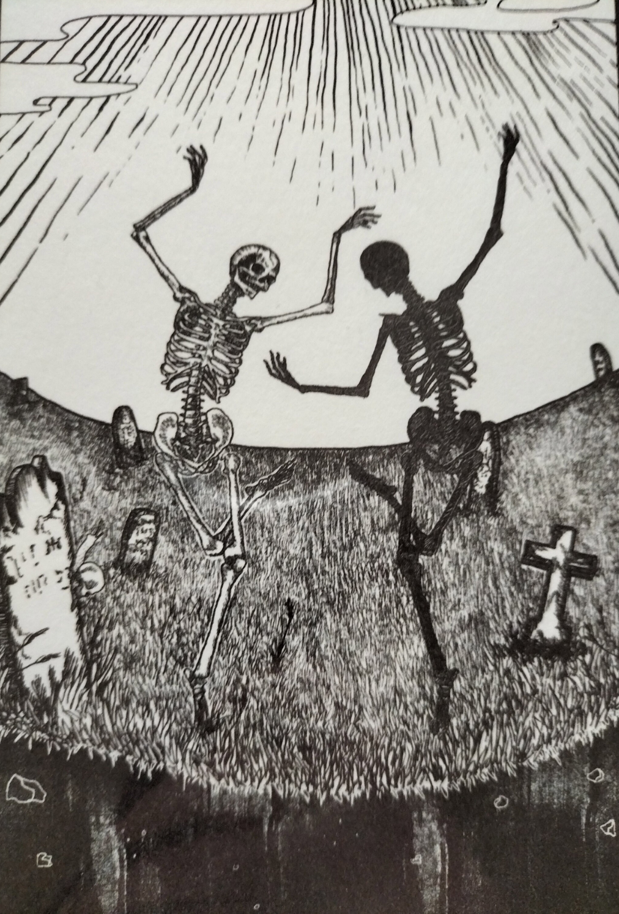Vocẽ é incenerado pelo ataque nuclear... Seus ossos viram pó sua carne vira chamas sua memoria se torna menos que um sopro e sua alma agora habita no fogo. Não do inferno, mas sim de um cogumelo nuclear incandecente. Uma das Bilhões de vitimas militares.
O rochedo se revelou uma pequena caverna com agua limpa e muitos animais, você se sente seguro, você encontra paz no apocalipse. Raizes vermelhas começam a crescer e agarrar os animais maiores e mais lentos, eles são esmagados e esmirilhados, os gritos animais tão torturantes. Você escuta passos pesados vindos da entrada da caverna.
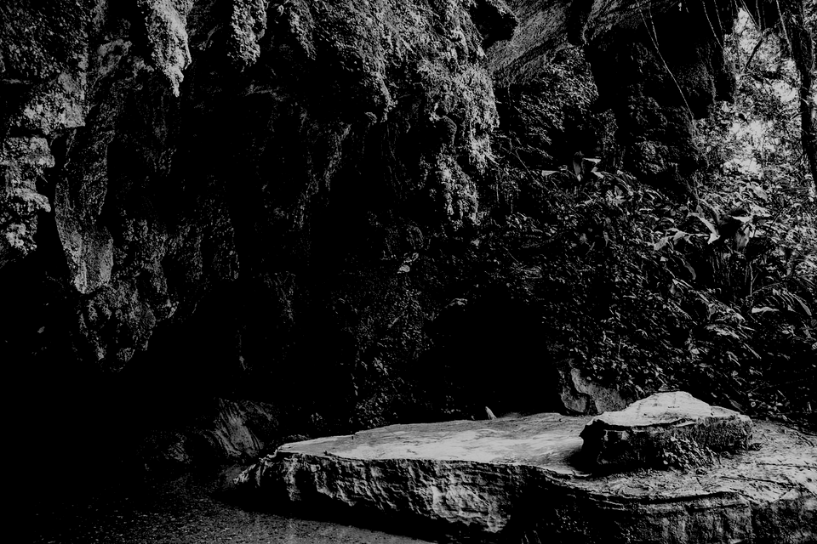1 de novembro 2010 as 14:51h
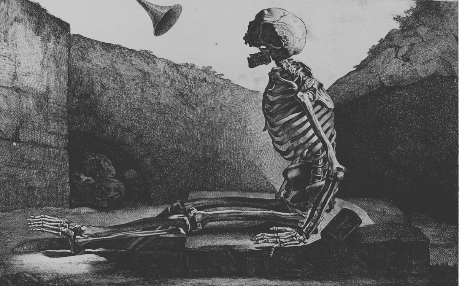As raizes não te perdoam, elas retorcem seus ossos e ragam sua carne. O teto da caverna rompe sobterrando seu corpo junto a todos os animais. Uma das bilhões de vitimas dos anjos.
Você encotra um alçapão na terra, talvez um bunker? isso atiça sua iniciativa de sobrevivencia. Como é possivel um bunker metalico parado em um lugar tão aleatório? Você abre as portas... Uma o alçapão se abre sons de musica Heavy Metal um calor forte toma conta de você, seja bem vindo a o inferno. Onde melhor pra se esconder de Deus e seus anjos? você sobreviveu o dia do fim do mundo e viveu por mais algumas semanas... meses... anos... quem sabe?
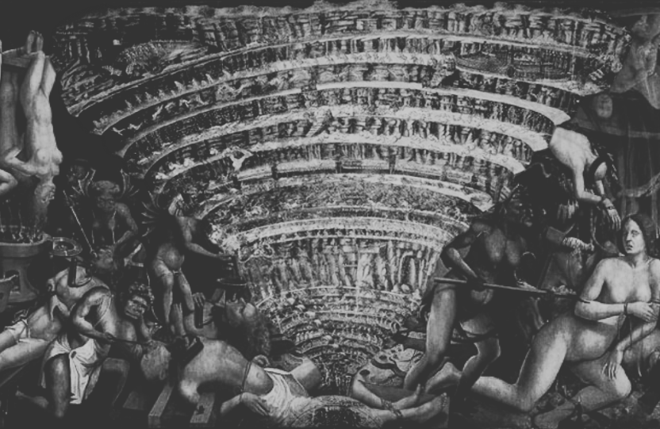Varias pessoas amultuadas na praça da cidade Alguns helicópteros militarem fazem o resgate de civils, os militarem gritam em auto falantes “Mulheres e Crianças primeiro!! Todos os feridos devem ir para o Hospital imediatamente!!”

Talvez você não tenha tempo para a segunda chamada... Mas a sorte sorrio pra você hoje! Uma bebe chora frente no hospital. “Papai Papai!!”
Soldados abatidos por todos os lados, cinzas começam a cair do céus como chuva. a fachada da sua casa coberta em viceras. policiais, vizinhos, militares, até mesmo alguns animais domesticos esmirilhados.

Você sente o peso da morte rescaindo em seus ombros Para onde ir?
1 de novembro de 2010 as 15:09h
tudo está no devido local, aquela brisa gelada confortavel te recebe bem... paz no inferno, você escuta um estralado leve na madeira...
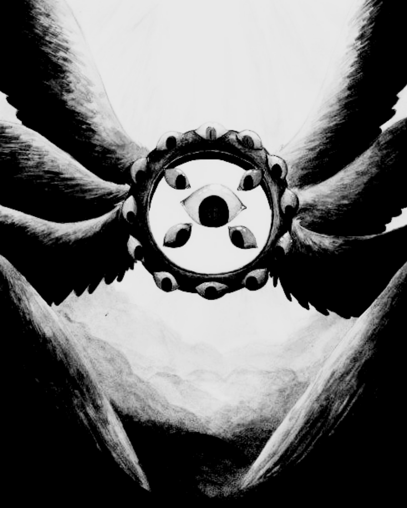um ser de 5 metros multiplas asas aeureulas com olhos cobertos em sangue e uma luz no no seu centro voa atravessando o teto com agressividade. ele dispara um feixe de luz que te corta como lamina. Você cai em meio a os destroços de sua casa. Um das bilhões das vitimas dos Anos.
1 de novembro de 2010 as 15:05h
Agora é tarde... você começa a correr desesperadamente trupicando nas pilhas de corpos e sangue chorando como um verme miseravel.
um ser de 5 metros multiplas assas aeureulas com olhos cobertos em sangue e uma luz no seu centro, voa atravessando o teto com agressividade. você assiste o anjo com um feixe de luz te atingir, um unico golpe sem misericordia te destruindo completamente. Um das bilhões das vitimas dos Anos.
Você é um ser humano horrivel e imoral e o mundo seria melhor sem pessoas como você.
você pega a criança e se passa por Pai/Mãe segura a criança em prantos nos seu colo, ela chora tanto... um militar na frente do helicóptero te deixa entrar.
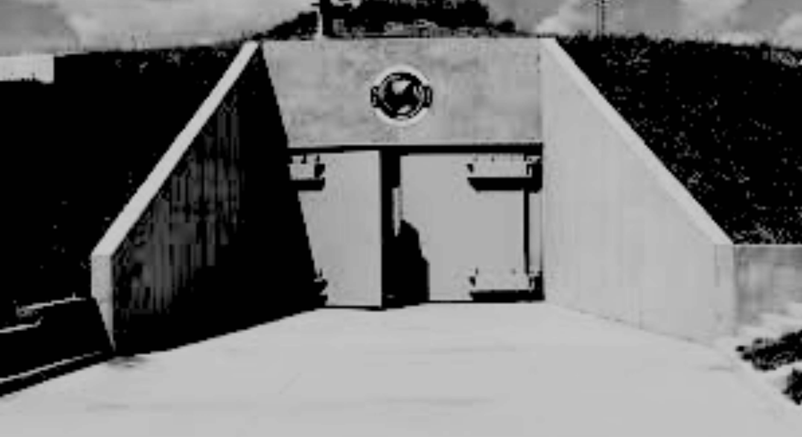No domingo de 1 de novembro mais de 77,7% da população havia sido morta por anjos. E dano colateral das bombas nucleares, no fim dessa mesma semana o numero de mortos era de 97,4%. Você voou até um bunker escondido. você sobreviveu o dia do fim do mundo e viveu por mais algumas semanas... meses... anos... quem sabe?
1 de novembro de 2010 as 15:34h
Você entra no hospital... silencio absoluto você observa alguns militares empilhando corpos. todos destruidos de uma maneira diferente, queimaduras, membros removidos, alguns tem ferimentos de balas.
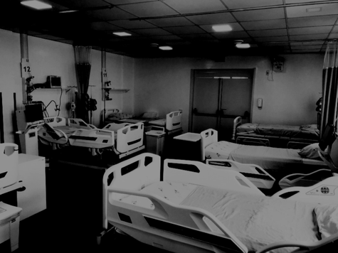Você vê um dos militares atirando em um jovem, Estão eliminando os feridos “Ei você!!” um outro militar atrás de você mira em você “Merda nós descobriram!” você foi metralhado ali mesmo, Uma das bilhões de vitimas militares.
1 de novembro de 2010 as 15:34h
Um anjo aparece uma figura sacra com metros de altura muitos pares de asas e, cabelos ruivos que chora rios de sangue. Ele te decapita com as mãos antes dos seus gritos ecoarem pela floresta. Uma das Bilhões de vitimas dos Anjos.